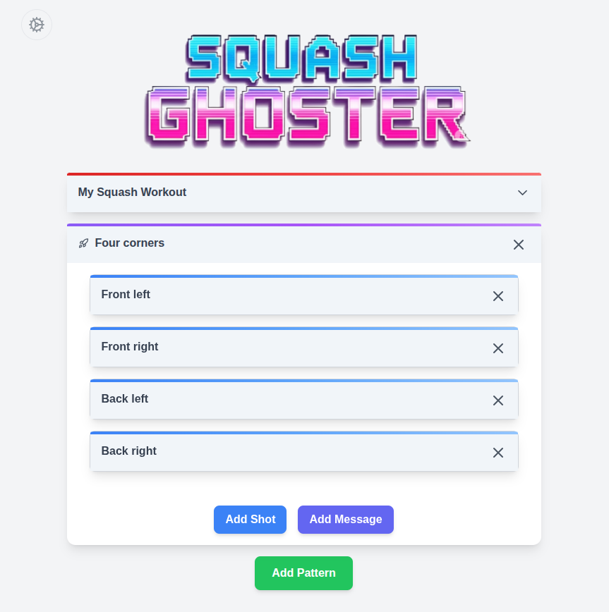

Squash Ghoster
Quick Start Guide
Learn the basics of using the Squash Ghoster tool to create, preview, and run squash workouts.
Getting Started
The Squash Ghoster tool is designed to help you create structured, timed workouts for squash training.
Whether you're a coach looking to create drills for your players or a player wanting to practice specific shot patterns,
this tool provides the flexibility to design workouts that match your training goals.
The application works by allowing you to define shot patterns, set timing intervals, and configure audio cues that
will guide you through your workout. You can create simple repetitive drills or complex multi-pattern sequences
with varying difficulty levels and timing requirements.
Workout Structure
Squash Ghoster organizes workouts using a hierarchical structure: Workout → Pattern → Shot/Message.
A workout contains one or more patterns, each pattern contains multiple shots and messages, and each shot or message
has its own timing and audio settings. This structure allows you to create complex training routines by combining
simple building blocks.
Shot Sequence Timing
Each shot in a workout follows a timing sequence designed to facilitate ghosting practice. The sequence includes
narration (with lead time for recognition), a split-step cue, and a final shot sound. This structured timing helps you
develop consistent movement patterns, footwork, and shot preparation techniques essential for effective ghosting training.
Example Shot Cycle Timeline (4.0 seconds)
0.0s: Shot period begins
1.5s: Narration begins (2.5s ahead of shot)
3.7s: Split step sound plays
4.0s: Shot sound plays & period ends
Open the Application
Navigate to the main application page to begin creating your squash workout. The interface will load with a default workout configuration that you can modify or replace entirely.
Load a Sample Workout
Start by loading one of the included sample workouts to see how the system works. These examples demonstrate different approaches to workout design and will help you understand the various features available.
Explore the Interface
Familiarize yourself with the floating toolbar and main interface elements. The toolbar provides quick access to all major functions, while the main area shows your current workout configuration.
Main Menu Mode

The main menu mode is your primary workspace for configuring squash workouts. This is where you'll spend most of your time setting up patterns, shots, and timing.
The interface is designed to be intuitive while providing powerful customization options for creating workouts that match your specific training needs.
In this mode, you can define the structure of your workout by creating patterns that contain specific shot sequences. Each pattern can be repeated multiple times,
shuffled for variety, or combined with other patterns to create complex training routines. The system supports both simple repetitive drills and sophisticated
multi-pattern workouts with varying timing and difficulty levels.
Key Features
- Workout Configuration: Set up patterns, shots, and timing intervals with precise control over each element
- Pattern Management: Create and organize shot patterns with repeats, shuffling, and conditional logic
- Timing Controls: Configure shot intervals, prep times, and message timing for optimal training flow
- Audio Settings: Set up text-to-speech voices, audio ducking, and sound effect preferences
Loading and Saving Workouts
The application supports multiple ways to load and save your workout configurations. You can work with files, clipboard, and favorites,
making it easy to share workouts with others, backup your configurations, or quickly switch between different training routines.
The system includes built-in validation to ensure that loaded workouts are properly formatted and will work correctly.
All workout data is stored in JSON format, which is both human-readable and easily shareable. This means you can edit workout files
in any text editor if needed, or share them with other players and coaches. The application will automatically validate any loaded
workout to ensure it contains all required elements and follows the proper structure.
Loading Workouts
From File
Click the Load button in the toolbar
Choose a .json workout file
The workout will be validated and loaded
From Clipboard
Click the Load button in the toolbar
Select Paste from Clipboard
The workout JSON will be parsed and loaded
Saving Workouts
To File
Click the Save button in the toolbar
Choose a location and filename
The workout will be saved as a .json file
To Clipboard
Click the Save button in the toolbar
The workout JSON will be copied to your clipboard
Pro Tip
Use the clipboard features to quickly share workouts with others or backup your configurations.
The JSON format is human-readable and can be easily edited in any text editor. This makes it easy to
create variations of existing workouts or troubleshoot any issues with your workout configuration.